전자산업기사 (2012-03-04 기출문제)
1과목: 전자회로
1. 그림에서 A는 연산증폭기이다. Vi- Vo 관계로 가장 적합한 것은?
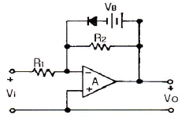
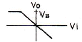
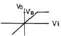
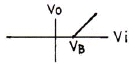
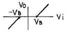
(정답률: 88%)

2. 다음 회로에서 Barkhausen의 발진 조건 βA=1 이 되는 조건은?
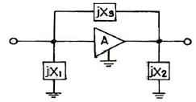
- X1 < 0, X2 > 0, X3 > 0
- X1 > 0, X2 < 0, X3 < 0
- X1 > 0, X2 < 0, X3 > 0
- X1 < 0, X2 < 0, X3 > 0
(정답률: 82%)
3. 다음 설명 중 옳은 것은?
- FET는 대칭형 쌍방향 스위치로 사용이 가능하다.
- FET는 게이트의 전류에 의해 제어되는 전류 제어용 소자이다.
- FET는 BJT에 비해서 동작 속도가 빠르기 때문에 집적회로(IC)에서 주로 사용한다.
- FET는 입력 임피던스가 매우 작기 때문에 초퍼 회로로 사용한다.
(정답률: 68%)
4. 다음 회로에서 LED의 순방향 전압이 2.4[V]일 때 전류 IF는 몇 [mA]인가?
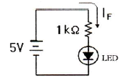
- 1.2[mA]
- 1.8[mA]
- 2.6[mA]
- 3.2[mA]
(정답률: 85%)
5. 다음 연산 증폭기 회로에서 출력 Vo를 나타내는 식으로 가장 적합한 것은?
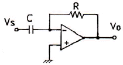
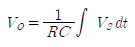
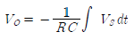
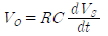
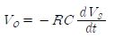
(정답률: 85%)
6. 공통 이미터저지 증폭회로에서 트랜지스터의 h-정수 중 전류증폭률을 나타낸 것은?
- hie
- hfe
- hre
- hoe
(정답률: 75%)
7. 다음과 같은 증폭기에 관한 설명으로 옳지 않은 것은?
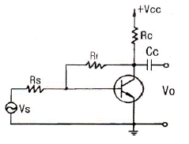
- 부궤환을 걸어줌으로써 출력 임피던스는 감소한다.
- 부궤환을 걸어줌으로써 입력 임피던스는 증가한다.
- 무궤환 때에 비해 안정도가 좋아진다.
- 부궤환을 걸어줌으로써 일그러짐은 감소한다.
(정답률: 79%)
8. 표본화된 정보 하나하나를 부호화하여 1, 0으로 나타내는 펄스 신호의 계열로 치환시키는 펄스변조 방식을 무엇이라 하는가?
- PCM
- PAM
- PWM
- PNM
(정답률: 83%)
9. 전력증폭기에 대한 설명으로 옳은 것은?
- A급의 경우가 전력효율이 가장 좋다.
- C급의 효율은 50[%] 이하로 AB급보다 낮다.
- B급은 동작점이 포화영역 부근에 존재한다.
- C급은 반송파 증폭용이나 주파수 체배용으로 사용된다.
(정답률: 87%)
10. 다음 중 발진기에서 발진주파수가 변동되는 것을 방지하기 위한 대책으로 적합하지 않은 것은?
- 온도를 일정하게 유지한다.
- 부하의 변동을 크게 한다.
- 정전압 회로를 넣는다.
- 습기가 차지 않게 한다.
(정답률: 85%)
11. 다음은 연산증폭기를 사용한 회로이다. 전압이득(Vo/Vs)은 얼마인가?
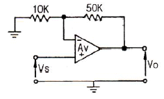
- -5
- 1/5
- 6
- -1/6
(정답률: 55%)
12. 다음 설명 중 옳지 않은 것은?
- 전력 효율은 전원 전력 소비량을 적게 하면서 신호 출력을 크게 할 수 있느냐 하는 지수를 말한다.
- A급 전력 증폭기의 컬렉터 손실은 무신호 시에 가장 작다.
- B급 전력 증폭기는 출력이 최대 가능 출력의 약 40[%]일 때 컬렉터 손실이 가장 크다.
- C급 전력 증폭기는 신호 출력의 첨두치에서 가장 큰 손실이 발생한다.
(정답률: 67%)
13. FET의 3 정수에 대한 사항들 중 옳지 않은 것은? (단, Source 접지이다.)
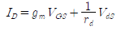
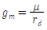
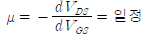
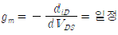
(정답률: 64%)
14. 펄스파를 얻는 목적에 쓸 만한 것이 아닌 것은?
- 쌍안정 멀티바이브레이터
- 블로킹 발진기
- 플립플롭
- 단접합 트랜지스터(UJT)
(정답률: 66%)
15. 이상적인 차동증폭기의 공통성분제거비(CMRR)는?
- 0
- 1
- -1
- 무한대
(정답률: 90%)
16. 다음 회로에서 입력 단자와 출력 단자가 도통되는 상태는?
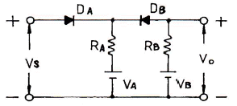
- VS > VB, VA < VB
- VS < VA, VA < VB
- VS < VA, VS > VB
- VS > VA, VS < VB
(정답률: 73%)
17. 다음 연산증폭기 회로에서 Vi - Vo의 관계 특성으로 가장 적합한 것은? (단, 연산증폭기 및 다이오드는 이상적이다.)
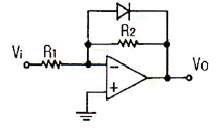
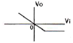
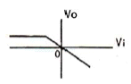
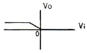
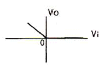
(정답률: 85%)
18. 궤한이 없을 때 증폭기의 전압이득이 40[dB]이고, 왜율이 5[%]이다. 이 증폭기에 궤환율 β=0.09의 부궤환을 걸었을 때 왜율은?
- 0.1[%]
- 0.5[%]
- 1[%]
- 5[%]
(정답률: 69%)
19. 다음 중 정궤환을 하는 회로로 묶인 것은?
- 시미트 트리거회로, 발진회로
- 미분회로, 적분회로
- 시미트 트리거회로, 미분회로
- 발진회로, 적분회로
(정답률: 86%)
20. 전류증폭률 α가 0.98인 트랜지스터의 α 차단 주파수가 100[MHz]일 때 이 트랜지스터의 β 차단 주파수는?
- 2[MHz]
- 20[MHz]
- 98[MHz]
- 100[MHz]
(정답률: 70%)
2과목: 전기자기학 및 회로이론
21. 인덕턴스의 단위에서 1[H]는?
- 1[A]의 전류에 대한 자속이 1[Wb]인 경우이다.
- 1[A]의 전류에 대한 유전률이 1[F/m]이다.
- 1[A]의 전류가 1초간에 변화하는 양이다.
- 1[A]의 전류에 대한 자계가 1[AT/m]인 경우이다.
(정답률: 75%)
22. 100회 감은 코일에 코일당 자속이 2초 동안에 2[Wb]에서 4[Wb]로 증가하였다면, 이때 유기되는 기전력은 몇 [V]인가?
- 20[V]
- 50[V]
- 100[V]
- 200[V]
(정답률: 62%)
23. 반지름 a인 단일 원형코일에 전류를 흘려줄 때 원형코일 중심에서의 자계의 세기 H[AT/m]와 반지름 a[m]의 관계는?
- H ∝ 1/a
- H ∝ 1/a2
- H ∝ a
- H ∝ a2
(정답률: 53%)
24. 유전율 ε[F/m], 고유저항 ρ[Ωㆍm]의 유전체를 삽입한 정전용량 C[F]인 콘덴서에 전압 V[V]를 걸었을 때 흐르는 누설전류는 몇 [A]인가?
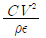
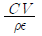
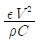
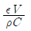
(정답률: 63%)
25. 1[μF]의 정전용량을 가진 구의 반지름은 몇 [km]인가?
- 9[km]
- 45[km]
- 4500[km]
- 9000[km]
(정답률: 70%)
26. 공기 중 두 점전하 사이에 작용하는 힘이 5[N]이었다. 두 전하 사이에 유전체를 넣었더니 힘이 2[N]으로 되었다면 유전체의 비유전율은 얼마인가?
- 2.5
- 5
- 10
- 15
(정답률: 72%)
27. 전속 밀도 D=x2i + y2j + z2k [C/m2 ]를 발생시키는 점(1, 2, 3)[m]에서의 공간 전하밀도[C/m3]는?
- 14[C/m3]
- 12[C/m3]
- 14×10-6[C/m3]
- 12×10-6[C/m3]
(정답률: 59%)
28. 유전체내의 전속밀도 D, 전계의 세기 E, 그리고 분극 P의 관계를 나타내는 식은?
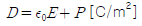
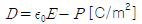
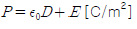
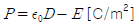
(정답률: 53%)
29. 0.1[μF]의 종이콘덴서를 만들 때, 두께 0.01[mm], 비유전율 5의 유전체를 사용하고 폭이 5[cm]라고 하면 필요한 도체의 길이는?
- 1.8[m]
- 0.9[m]
- 0.45[m]
- 0.15[m]
(정답률: 51%)
30. 시변 전자파에 대한 설명 중 옳지 않은 것은?
- 전자파는 전계와 자계가 동시에 존재한다.
- 횡전자파(transverse electromagnetic wave)에서는 전파의 진행 방향으로 전계와 자계가 존재한다.
- 포인팅 벡터의 방향은 전자파의 진행 방향과 같다.
- 수직편파는 대지에 대해서 전계가 수직면에 있는 전자파이다.
(정답률: 58%)
31. 그림과 같은 파형의 라플라스 변환은?
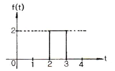
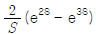
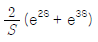
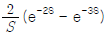
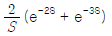
(정답률: 74%)
32. R, L, C 직렬회로에서 공진주파수 fo는?
- LC의 제곱근에 반비례하여 감소
- C에 비례하여 증가
- L에 비례하여 증가
- 변화 없다.
(정답률: 76%)
33. 그림과 같은 이상 변압기(ideal transformer) M의 값은 몇 [H]인가? (단, L1= 2[H], L2= 8[H]이다.)
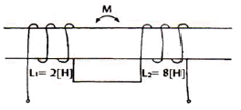
- 2
- 4
- 8
- 16
(정답률: 79%)
34. 그림과 같은 브리지(bridge)가 평형 상태를 유지하려면 L의 값은?
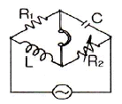
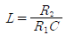
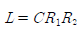
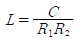
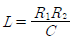
(정답률: 70%)
35. 전송 회로에서 특성 임피던스 Z0와 부하 임피던스 ZL이 같으면 부하에서의 반사계수는?
- 0
- 0.5
- 1
- 1.5
(정답률: 76%)
36. 다음 그림과 같이 R=1[Ω], L=1[H]인 직렬회로에 V=1[V]의 전압을 가하고 t=0일 때 스위치 S를 닫았다. t=τ(시정수)때의 전류 I(τ)는 몇 [A]인가?
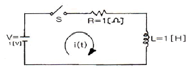
- 1
- 0.707
- 0.632
- 0.368
(정답률: 56%)
37. 이상적인 평형 3상 Δ전원에 관한 것으로 옳은 것은?
- 선간 전압의 크기 = 상전압의 크기
- 상전류의 크기 = √3 × 선간 전류의 크기
- 상전류의 크기 = 선간 전류의 크기
- 선간 전압의 크기 = √3 × 상전압의 크기
(정답률: 60%)
38. 4단자 파라미터 ABCD 중에서 단락 역방향 전류 이득을 나타내는 파라미터는?
- A
- B
- C
- D
(정답률: 80%)
39. 다음 파형 중 파형률이 가장 적은 것은?
- 삼각파
- 정현파
- 구형파
- 반원파
(정답률: 82%)
40.
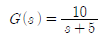
에서 주파수 전달 함수의 위상각 θ 는 몇 상한에 위치하는가?- 1상한
- 2상한
- 3상한
- 4상한
(정답률: 77%)
3과목: 전자계산기일반
41. 다음 중 스택(stack)과 관계없는 것은?
- FIFO
- LIFO
- PUSH
- POP
(정답률: 79%)
42. 연산장치에서 피가수를 기억하고 연산 후에는 결과를 일시적으로 기억하는 레지스터를 무엇이라 하는가?
- accumulator
- storage register
- index register
- instruction counter
(정답률: 83%)
43. 다음 논리식
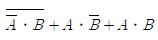
를 간단히 표현하면?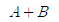
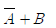
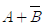
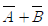
(정답률: 74%)
44. 7K word memory의 실제 word는?
- 1024 word
- 4096 word
- 7168 word
- 8192 word
(정답률: 79%)
45. -426을 Pack 10진수 형식으로 표현한 것은?
- 0100 0010 0110 1101
- 0100 0010 0110 1100
- 1101 0100 0010 0110
- 1100 0100 0010 0110
(정답률: 73%)
46. 기억장치 중 CAM(Content Addressable Memory)이라고 하는 것은?
- cache 기억장치
- associative 기억장치
- 가상 기억장치
- 주 기억장치
(정답률: 65%)
47. 8개의 플립플롭으로 된 시프트 레지스터(Shift Register)에 10진수로 64가 기억되어있을 때 이를 오른쪽으로 3비트만큼 산술 시프트하면 그 값은?
- 4
- 8
- 12
- 24
(정답률: 79%)
48. 캐시 메모리에 대한 일반적인 설명으로 틀린 것은?
- 캐시 메모리의 액세스 시간은 주기억장치의 액세스 시간보다 빠르다.
- 캐시 메모리는 중앙처리장치와 주기억장치 사이에 놓인다.
- 캐시 메모리의 적중률(hit ratio)이 높을수록 좋다.
- 캐시 메모리는 용량이 주기억장치보다 크다.
(정답률: 69%)
49. C 언어에서 논리 연산자와 관계있는 것은?
- ++
- &&
- +
- <
(정답률: 78%)
50. 컴퓨터 레지스터들 중에서 Read나 Write 내용이 반드시 거쳐야 되는 레지스터는?
- PC(Program Counter)
- IR(Instruction Register)
- MBR(Memory Buffer Register)
- MAR(Memory Address Register)
(정답률: 65%)
51. 10진수 15의 그레이 코드(gray code)는?
- 1111
- 0001
- 1000
- 1010
(정답률: 66%)
52. 다음 주소지정방식 중 오퍼랜드 자체를 데이터로 기억하는 방식은?
- 묵시적 주소지정방식
- 즉시 주소지정방식
- 인덱스 주소지정방식
- 상대 주소징정방식
(정답률: 66%)
53. 컴파일러, 어셈블러, 인터프리터에 의해 번역되어야 실행될 수 있는 것은?
- 문제중심 프로그램
- 기계 프로그램
- 목적 프로그램
- 원시 프로그램
(정답률: 67%)
54. JK 플립플롭에서 J = K = 1일 때, Qn+1의 출력상태는?
- 반전
- 1
- 0
- 불변
(정답률: 77%)
55. 다음 중앙처리장치의 4가지 기능에 대한 설명 중 옳지 않은 것은?
- 기억 기능을 수행하는 요소를 레지스터라 하며, 앞으로 당장 사용할 자료를 ROM에 기억한다.
- 연산 기능을 수행하는 요소는 연산기로서, 수치 연산과 논리 연산을 수행한다.
- 연산기와 레지스터 사이의 신호 회선을 통해 자료가 전달되는 기능이 전달 기능이다.
- 프로그램 의도대로 인스트럭션이 수행되도록 프로그램 카운터(PC)를 관리하며 인스트럭션을 해독하여 그 수행을 반복하도록 하는 기능이 제어 기능이다.
(정답률: 68%)
56. 반가산기에서 X=0, Y=1을 입력할 때, 출력 올림수(C)와 합(S)은?
- C=0, S=0
- C=1, S=0
- C=0, S=1
- C=1, S=1
(정답률: 77%)
57. 객체지향언어로 볼 수 없는 것은?
- JAVA
- C#
- C
- SmallTalk
(정답률: 76%)
58. 10진수 -9를 부호화된 2의 보수로 표현(8bit)한 것은?
- 10001001
- 11110110
- 00001001
- 11110111
(정답률: 57%)
59. 컴퓨터의 성능을 측정할 수 있는 방법으로 단위 시간에 얼마나 많은 일을 실행했는가를 나타내는 것은?
- Clock
- Frequency
- Response Time
- Throughput
(정답률: 74%)
60. 마이크로 오퍼레이션에서 명령어를 메모리로부터 읽은 내용이 오퍼랜드(operand)의 번지일 경우 수행과 관련있는 것은?
- 인터럽트 사이클
- 인출 사이클
- 실행 사이클
- 간접 사이클
(정답률: 38%)
4과목: 전자계측
61. 계기정수 2400[Rev/kWh]의 적산전력계가 30[초]에 15회전 했을 때의 전력[W]은?
- 500
- 750
- 1000
- 1250
(정답률: 61%)
62. 다음 중 파형을 보면서 주파수 펄스 전압을 측정하는데 가장 적당한 계기는?
- 전압계
- 전위차계
- 전류계
- 오실로스코프
(정답률: 85%)
63. 계수형 주파수계로 측정할 수 없는 것은?
- 주기 측정
- 고주파 진폭
- 분주비
- 주파수 측정
(정답률: 75%)
64. 저주파대의 주파수 부표준기로 사용되며, 발진주파수를 연속 가변 할 수 없는 발진기는?
- 비트 주파 발진기
- 음차 발진기
- CR 발진기
- 소인 발진기
(정답률: 56%)
65. 다음 중 고주파 전력 측정에 이용되는 것은?
- 볼로미터
- 딥미터
- 캠벨 브리지법
- 홀 발진기
(정답률: 72%)
66. 기지의 정전용량으로 미지 코일의 인덕턴스 측정에 사용되는 브리지는?
- 윈 브리지
- 맥스웰 브리지
- 켈빈더블 브리지
- 콜라우슈 브리지
(정답률: 72%)
67. 무부하시 전압이 220[v]이고, 정격 부하시 전압이 200[V]일 때 전원전압 변동률은?
- 5[%]
- 10[%]
- 15[%]
- 20[%]
(정답률: 84%)
68. 다음 중 1[Ω]~10-5[Ω]의 아주 적은 저항을 측정할 때 사용하는 것은?
- 캘빈더블브리지(Kelvin double bridge)
- 휘스톤브리지(Wheatstone bridge)
- 맥스웰브리지(Maxwell bridge)
- 윈브리지(Wein bridge)
(정답률: 78%)
69. 2전력계법을 사용하여 3상 전력을 측정하였더니 각 전력계가 150[W], 170[W]를 지시하였다면 전 전력은?
- 20[W]
- 160[W]
- 320[W]
- 470[W]
(정답률: 76%)
70. 다음 중 측정용 저주파 발진기로 주로 사용하지 않는 것은?
- 비트 발진기
- 음차 발진기
- CR 발진기
- 수정 발진기
(정답률: 64%)
71. 디지털 주파수계를 설명한 것 중 옳지 않은 것은?
- 10진 계수회로가 필요하다.
- 입력 전압을 증폭하여 파형을 펄스형으로 바꾼다.
- 정확한 시간 기준으로서 수정 발진기가 필요하다.
- 입력 피측정파를 분석하기 위하여 진폭레벨에 의한 A/D 컨버터가 필요하다.
(정답률: 71%)
72. 최대 눈금 300[V]인 0.2급 전압계로 전압을 측정하였더니 지시가 100[V]이었다. 상대오차는?
- 0.2[%]
- 0.4[%]
- 0.6[%]
- 0.8[%]
(정답률: 81%)
73. 다음 기록계기의 기록 방식 중 정밀도가 가장 높은 것은?
- 펜식
- 직동식
- 타점식
- 자동평형식
(정답률: 79%)
74. 다음 중 진동편형 주파수계의 특징으로 옳지 않은 것은?
- 지시의 신뢰성이 높다.
- 보통 1000[Hz] 이상에서 사용된다.
- 지시가 단계적이고, 연속성이 없다.
- 구조가 간단하고, 전압의 파형에 영향이 없다.
(정답률: 63%)
75. 스펙트럼 분석기의 특징으로 적합하지 않은 것은?
- 주파수 대역폭이 넓다.
- CRT로 직시할 수 있다.
- 다이나믹(dynamic) 레이지가 좁다.
- 고정도(high precision) 측정이 가능하다.
(정답률: 75%)
76. 내부 저항이 무한대인 전압계로 단자 A-B간의 전압을 측정하면?
- 3[V]
- 6[V]
- 10[V]
- 15[V]
(정답률: 86%)
77. 음량계(VU meter)에 관한 설명으로 옳지 않은 것은?
- 감시용이며, 시정수는 중요하지 않다.
- 가변 저항 감쇠기와 연결하여 사용한다.
- 눈금은 VU 눈금 이외에 [%]눈금으로 표시한 것도 있다.
- 방송이나 녹음시 음성 레벨의 크기를 측정하기 위한 계기이다.
(정답률: 79%)
78. 10:1의 신호입력 프로브(PROBE)를 갖고, 수직 편향율이 2.5[V/cm]인 오실로스코프에서 수직편향 거리가 5[cm]일 때 입력 전압의 크기는?
- 20[V]
- 50[V]
- 1.25[V]
- 125[V]
(정답률: 54%)
79. 고주파 전압 측정에 이용되는 것은?
- 레벨미터
- 볼로미터
- Q미터
- 전자전압계
(정답률: 49%)
80. 다음 중 오실로스코프로 측정할 수 없는 것은?
- 전압
- 주기
- 위상각
- 전력량
(정답률: 75%)